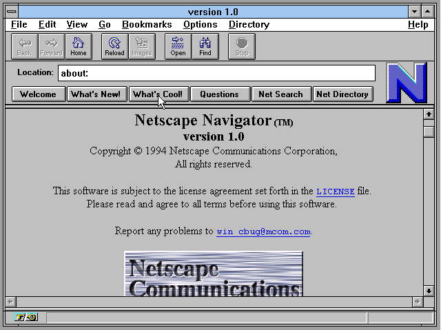

Browser Wars
Netscape vs Microsoft IE
Reeling back to mid-90s there was an intense competition between two well-known browsers Netscape’s Navigator and Microsoft IE. What is a browser? A browser is web viewing software that is used to access internet. Prior to Microsoft IE, Netscape Navigator came into lime light it had its own GUI and it had highly successful IPO which led to internet boom in the early 90s. Navigator rated highest in terms of usability and number of users. General Public had to pay in-order to use Navigator web-browser before 1988. Netscape generated highest revenue until then as it was the only well-known browser during that time before Microsoft IE came in.

Netscape Navigators GUI had very well versed features which was beneficial to its users and help them easily access the information they were seeking for. The languages used to build Navigator were HTML and JavaScript. Netscape came out with different improvised version of web-browsers which was more compatible for the users to work through. Netscape browser superiority didn’t last longer as Microsoft IE came in. This in-turn changed created fierce competition between these both browsers. Lets see what bought Netscape out of the competition.
Bill Gates is the founder of world’s largest, well-known, and robust software business Microsoft. Fact: 90% of world’s pc runs on Microsoft Operating System. An operating system is required to run internet browser. Micro stands for “Micro-Computer” and soft stands for “Software”. Microsoft operating system, browser, and software’s have been very popular ever since it’s very compatible for the users of any age to get equipped to that OS. Bill Gates Microsoft made highest revenue due to its OS as users required having OS to run software’s and browsers.
Now the question arises “what caused Netscape Navigator to fail in the market?” Netscape Navigator was a browser it needed an operating system to run on as Netscape browser was not available for free it needed to be purchased. Whereas Microsoft IE ran on Microsoft OS and did not require any download. Bill Gates further decided users whom purchased the Microsoft OS he would provide them with bundled MS software and MS IE. This led to rivalry between both companies.

MS IE was slow and had bugs but people preferred MS IE which was available for free over the purchase of MS OS; whereas, Netscape browser required to be purchased this made users switch toward using MS IE. Netscape when tried to give it browser for free it failed in market as it was not able to make any revenue as it tried selling its browser for free. Microsoft revenue sky rocketed as users’ required purchasing MS OS in-order to run internet browser. This made Netscape fade away from market as it only sold browser and not OS.
Image Source:
https://forum.winworldpc.com/discussion/7628/software-spotlight-netscape-navigator-1-0
https://www.thesoftwarereport.com/bill-gates-joins-the-search-for-a-coronavirus-vaccine-by-investing-billions-of-dollars-on-research-and-development/
https://unsplash.com/